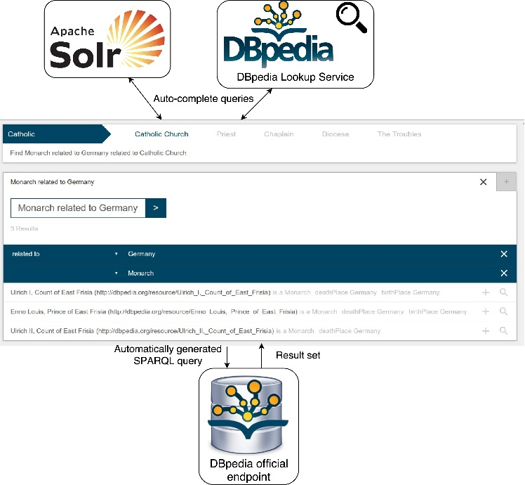
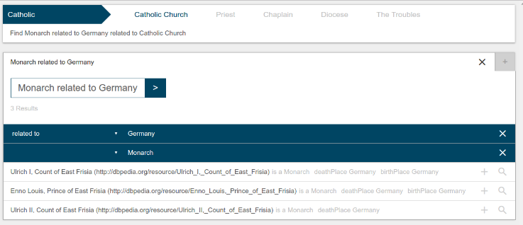

ACM Subject Categories
Web searching and information discovery
Ontologies
Search Interfaces
Keywords
DBpedia Search
Graph Query
Graph Exploration
ABSTRACT
DBpedia has existed for almost over a decade now. Although the data and the community created ontology have received immense investment, good tools to query and explore the data are still rare. In this paper, we present a prototype that attempts to break down complexity of graph querying into simple and guided steps. During the implementation of our DBpedia Explorer, we faced many barriers that can be traced back to a lack of data quality as well as the design of the DBpedia Ontology. We investigated these problems in detail based on a small sub-graph of DBpedia and gained valuable insights that will hopefully allow us to apply data transformation and fixes to DBpedia that will be beneficial for browsing and querying of the data in the future.
INTRODUCTION
When looking for information on the web, most people would usually make use of the well-established search engines like Google - and when doing more detailed research on a specific topic, one will definitely come across Wikipedia. Even though Wikipedia contains as much information as no other online encyclopedia, some information that is actually there is hard to acquire for the user. This hidden information lies for example in the relation between elements of interest or the things that some elements may have in common. Querying against the DBpedia knowledge graph using SPARQL is an efficient way to retrieve that information. This obviously requires knowledge of the SPARQL language or at least some knowledge in query languages.
In order to make the DBpedia knowledge graph more accessible for everyone, more and more search tools have appeared during the last few years. However, there is a lack of tools and approaches to efficient and simple query generation. Our work is trying to create a tool that is easy to use and still creates complex and meaningful queries. We tried to break down the query generation into simple incremental steps. Using our prototype DBpedia Explorer, we explored data quality issues that, once resolved, will make the further development of linked-data-based search engines much easier.
RELATED WORK
There is some effort in providing solutions to support inexperienced users in querying and searching through the LOD cloud. An overview can be found in
[2]
[3]
. In gFacet
[7]
, authors present an approach to explore RDF data by combining graph-based visualization with faceted filtering techniques. Their main intention was to provide a visual approach, being able to plot RDF data as graphs. The Faceted wikipedia search
[6]
is also another related tool that uses facets to guide users through their search results. Both solutions face the same problems with ontology and quality issues as outlined in the evaluation section. The main intention of the ExConQuer Framework
[1]
is to support unexperienced users in building SPARQL queries. Although our tool also automatically generates the necessary SPARQL queries, it is not our final result. SPARKLIS
[4]
has some common features with our implementation, such as a natural language explanation of the query and search by concepts (which includes classes, instances, etc.), although it does not include a filter/expand approach as we do in our auto-complete search bar, which was designed to guide users through data. Finally, Parallax
[8]
can be considered as the tool that influenced the most in our prototype development. However, it was designed as a facet search for Freebase
1
, which was built on user curated data and a much more consistent schema.
IMPLEMENTATION
Overview and Initial Search
. We restricted ourselves to a single text input field to keep the tool simple and to make it resemble a search engine rather than a query builder. The user interface of the tool can be seen in
Figure 2
and
Figure 3
. The text input of the user is then translated to an element of the DBpedia knowledge graph using an auto-complete feature. For this we used the DBpedia Lookup
2
service
providing a prefix search for all the instances of the graph. In order to include also both classes and properties of the DBpedia ontology into the tool, we added these to a custom Solr index and merged the output of both services. Using the results of the auto-complete, the user can create a search query that generates a SPARQL query which consults the official endpoint.
This initial query is defined as the first filter on the class Thing and creates the first tab. While additional filters limit the result set of the current tab, the expand operation will open in a new dependent tab, allowing the user to keep history, freely switch between sets and make changes to a set which will also propagate to sets expanding from it. The tab view also provides the options to close a set and to create a new empty one.
Figure 1
shows the high-level architecture of our tool.

Figure 1.
DBpedia Explorer High-Level Architecture
Filters
. A filter is either based on an instance, a class or a property from the underlying knowledge graph and can be added to a result set to generate its query. Filters based on instances are referred to as instance filters, the ones based on classes and properties as class filters and property filters respectively. Filters are rendered in natural language, so the user is always able to keep track of his current query. Class filters are displayed with their label, e.g. ”Actor”. When adding an instance as a filter, the filter will search for instances with an arbitrary relation to the previous filter. This arbitrary relation with the label
related to
(e.g. ”Actor related to Germany”) can be clicked on and changed to a specific property in a drop-down menu. Properties in the drop-down are ordered by the number of occurrences of the property with the filter instance. Each filter implements a function
F
(
i
) that generates a SPARQL snippet that is then inserted into the main query. A class filter with class
C
creates the snippet “?s
i
a C.”, a property filter with property
P
produces “?s
i
P
?o
k
.” and an Instance filter with instance
I
produces ”?s
i
?p
k
I
.”, where
k
is an integer that is increased when iterating over the set filters to create unique variables and
i
is an integer passed to the snippet generation function.
Expand
. Expands are used to create a relation between two sets (opening a new dependent tab). This relation can be arbitrary or a fixed property from the ontology. Each result set s
n
may have a set s
m
that it is expanding from. This set s
m
is referred to as the base set. Query generation is a base query with snippets S
1
to S
j
with S
n
being the snippet generated for set s
n
and with s
n + 1
being the base set of s
n
.
“SELECT ?S
0
WHERE "
+ S
0
+ S
1
+ … + S
j
+
" LIMIT 1000”
with S
n
being:
f
1
.
F
(
n
) +
f
2
.
F
(
n
) + … +
f
p
.
F
(
n
) +
Er
(
n
)
with
p
being the number of filters in the result set. The expand function
Er
(
i
) produces an empty snippet, if the set s
r
has no base set. Otherwise it yields the snippet “?s
i
?p
k
?s
i + 1
.” when describing an arbitrary relation between two sets. Expands can be added by clicking the expand button and will result in a new set searching for instances related to the previous set. This arbitrary expand can then also be refined by clicking the “
related to
” label in the set description and selecting a property from the drop-down.
Search Restrictions
. Entering a string into the search field will suggest one or more elements from the knowledge graph using auto-completion. The best match is then selected and used to suggest one or more possible operations the user can execute. These operations can be the addition of an expand, the addition of a filter or a combination of the two. The user can now submit his input to simply add the selected element as a filter or click on a suggested operation to execute it. When selecting properties and classes we excluded operations from the suggestion when they did not make sense (disjoint sets, such as
Persons that are also Castles
or
Places being birth place of Castle
). The collection of instances in the result set all have, per definition, the common type
owl:Thing
. This common type of all instances can be more specific as a class filter will force all instances of the set to be of a specific type. This common type is referred to as the set class. The set class prevents the user from adding any class or property filter that would change the set class to any class not being a sub- or super-class of the current one. This can occur when adding class or property filters as well as property expands. Checking for the validity of property filters and expands is done using the domain and range of the property.
Figure 2.
A step-by-step search example
EVALUATION
We targeted our evaluation to identify data quality issues in DBpedia that serve as requirements for future development of the ontology, which could allow easier exploration. We ran evaluation queries based on the following classes and their properties:
dbo:Castle
,
dbo:Building
,
dbo:ArchitecturalStructure
,
dbo:Place
,
dbo:Settlement
,
dbo:PopulatedPlace
,
dbo:Person
,
dbo:Monarch
and
dbo:Royalty
. This class set gave us good results with meaningful properties like
dbo:birthPlace
,
dbo:builder
or
dbo:architect
connecting the Building and Person domain. The operation suggestions work as expected, only providing meaningful suggestion when it comes to property and class filters. With our search tool, we found it easy to create both simple and complex queries by following the operation suggestions. However, we ran into difficulties when dealing with inconsistencies in the underlying data. In the following, we make use of concepts introduced by OntoClean
[5]
such as rigidity and identity; while the former can help improving recall, the latter is more interesting for exploration purposes as primary keys can serve as a natural partition of the data to explore.

Figure 3.
A query search expand example
Typing into the search field (upper left) will retrieve auto-complete suggestions and select the best match (”Catholic Church” colored blue). Below, the tool will provide operation suggestions. The current set already contains the filters ”Monarch” (class filter) and ”Germany” (instance filter). The ”related to” relation to Germany can be further refined by selecting a more specific property from the drop-down menu. The light grey information next to the results shows the exact relation(s) of the result to the filters.
In some cases, there are ambivalences between classes, properties and instances. For instance, searching for Monarch will suggest the class
dbo:Monarch
and also the instance
http://dbpedia.org/resource/Monarch
. In addition, there is a property labeled
monarch
. To hide this issue in the tool, we merged elements sharing the same label into one auto-completion result and created operation suggestions for each element. This way, all operations are available to the user; however, this behavior might be confusing for the user.
In many cases, the DBpedia knowledge graph contains empty classes. According to our analysis only 61.14% of DBpedia classes have instances (461 out of 754 classes). Searching for a class like
dbo:Biologist
will yield an empty result, which is unintended behaviour caused by the underlying data. In practice Biologists are usually linked to the
http://dbpedia.org/resource/Biologist
instance using the
dbo:field
property. In the case of
dbo:Actors
, the search does have results, though it is incomplete (6695 results). Most actors are linked to the
http://dbpedia.org/resource/Actor
instance with the
dbo:occupation
property (19802 results). It would make sense for the
dbo:occupation
property to be rigid, with the
http://dbpedia.org/resource/Actor
and similar instances being of type
dbo:Profession
. This would then facilitate the retrieval of a result set containing all instances of the same profession, no matter if it is Actor or Biologist. To get around this issue, the tool would require a custom handwritten rule set or a linked ontology that has equivalent terms and OntoClean annotations. Furthermore, we ran into problems regarding transitivity and missing OWL property chains. Data inconsistencies where, for example, some castles are linked to
http://dbpedia.org/reource/Germany
directly; some are only linked to a city in Germany and not the Germany instance itself, which causes incompleteness of data. In this particular case we found only 8 castles being related to the Germany instance with the
dbo:location
property and 51 when searching for castles with locations within Germany. Furthermore, Wikipedia states that the actual number of German castles is in the thousands
3
, so there are still a lot of castles missed even by our second query. Such issues can only fixed by custom inference rules in DBpedia itself as inclusion in our tool would make the queries a lot less efficient and yield many irrelevant results. This would as well require a custom rule set containing property chains for additional inference. We further tested for completeness of country assignment of
dbo:City
and
dbo:AdministrativeRegions
via
FILTER NOT EXISTS
and found that around 82% of these links are missing, thus rendering application-level property chains less effective.
In
Figure 2
, a full query example is shown. After searching for
Castle
and
Person
and clicking on the respective operation suggestions, the result set contained the list of
Persons related to Castles
. The search was then further refined by adding
Japan
as an instance filter, resulting in
Persons related to Japan related to Castles
. The relation between Persons and Castles could then be changed to something more specific by selecting a relation in the drop-down menu (
being owner of
,
birth place being
, etc.)
When allowing the user to specify the generic “
related to
” property in the expand and filter operation, we realized that property occurrence counts are insufficient to rank relevant properties accordingly as the general count lacks context specificity. Multiplying the count with a pre-calculated TF-IDF measure, where classes are documents and property occurrence of instances of this class are terms, yielded much better results, however, the measure is class-specific and can only be applied in some situations. Using the tool properly requires no knowledge of the SPARQL syntax or the structure of a query, however it currently requires a rough knowledge of the class and property names. This issue has to be tackled by a more sophisticated auto-completion using alternative labels of the ontology (for instance, the input ”born in” should be resolved to “
dbo:birthPlace
” by the auto-completion). While approaches to lexicalize DBpedia exist
[9]
, results have not yet been consolidated into the main knowledge graph and no synonyms exist.
CONCLUSION
We created an open-source search tool
4
with a simple input model and simplified query generation for inexperienced users, hiding the complexity of SPARQL and providing a way to explore the DBpedia knowledge graph. When testing the tool, we ran into a lot of difficulties that originate from data inconsistencies in the knowledge graph. Some issues can be avoided on the application level or hidden from the user (workaround). Application level fixes are difficult to find and will vary from application to application. In most cases they also require a handwritten rule set, which would take an immense amount of time looking at the vast amount of data in the DBpedia knowledge graph. We listed other data inconsistencies, like empty classes that need to be resolved to enable any tool to retrieve the expected results. In most cases, data inconsistencies would solve many application problems and are therefore the preferable issue to resolve. In the future, the development of the DBpedia Explorer will focus on patching data quality issues in an automated fashion to improve exploration.
The tool will also be extended to support literals as well as custom property substitution rules to further explore the usefulness of such an approach to work-around data quality issues more efficiently on the application level. While we have not done a full systematic analysis of DBpedia w.r.t. quality issues for exploration, the gained insights serve as a valuable starting point to create a systematic framework to consistently improve DBpedia.
ACKNOWLEDGEMENTS
This paper’s research activities were funded by grants from the FP7 & H2020 EU projects ALIGNED (GA-644055) and from the project Smart Data Web BMWi project (GA-01MD15010B) and CNPq foundation (scholarship 201808/15-3).
REFERENCES
J. Attard, F. Orlandi, and S. Auer. 2015. ExConQyer Framework-Softening RDF Data to Enhance Linked Data Reuse. In ISWC (Poster & Demos).
N. Bikakis and T. K. Sellis. 2016. Exploration and Visualization in the Web of Big Linked Data: A Survey of the State of the Art. CoRR abs/1601.08059 (2016).
Aba-Sah Dadzie and Matthew Rowe. 2011. Approaches to visualising Linked Data: A survey. Semantic Web 2, 2 (2011), 89–124.
Sébastien Ferré. 2014. SPARKLIS: a SPARQL endpoint explorer for expressive question answering. In ISWC (P&D Track).
Nicola Guarino and Christopher A. Welty. 2009. An overview of OntoClean. In Handbook on ontologies. Springer, 201–220.
R. Hahn, C. Bizer, C. Sahnwaldt, C. Herta, Scott R., M. Bürgle, H. Düwiger, andU. Scheel. 2010. Faceted wikipedia search. In BIS. Springer, 1–11.
Philipp Heim, Thomas Ertl, and Jürgen Ziegler. 2010. Facet Graphs: Complex Semantic Querying Made Easy. In ESWC (LNCS). Springer, Berlin/Heidelberg.
David F Huynh and David Karger. 2009. Parallax and companion: Set-based browsing for the data web. In WWW Conference. ACM. 61.
C. Unger, J. P. McCrae, S. Walter, S. Winter, and P. Cimiano. 2013. A lemon lexicon for DBpedia. In NLP-DBPEDIA workshop at ISWC, Vol. 1064. CEUR-WS.org